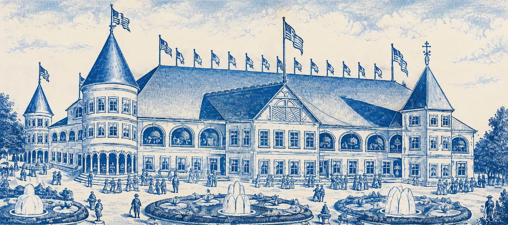
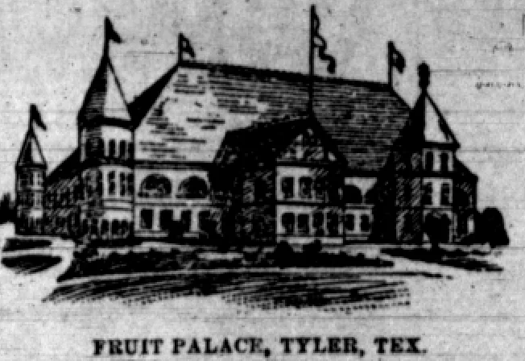
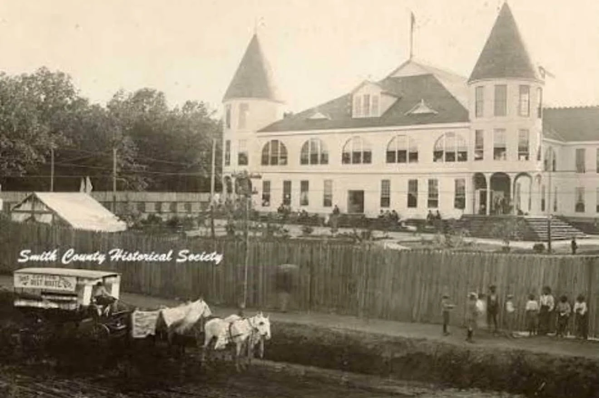
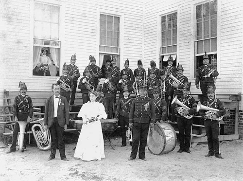
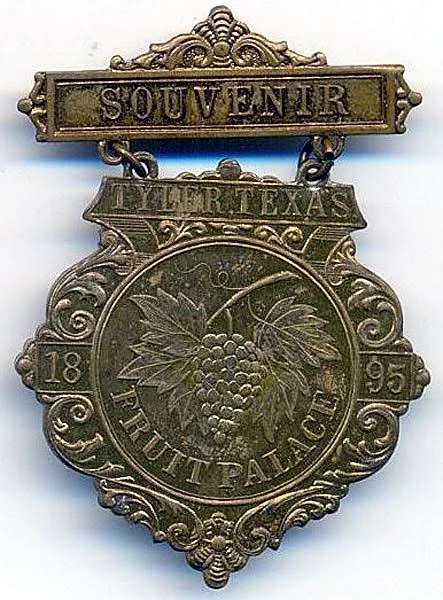
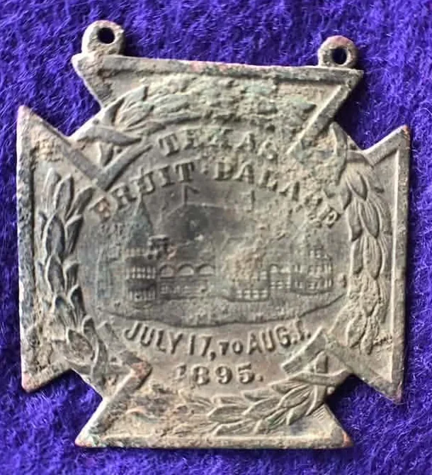
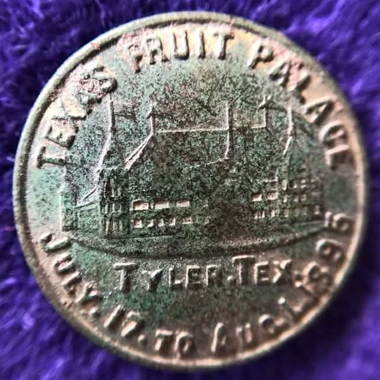
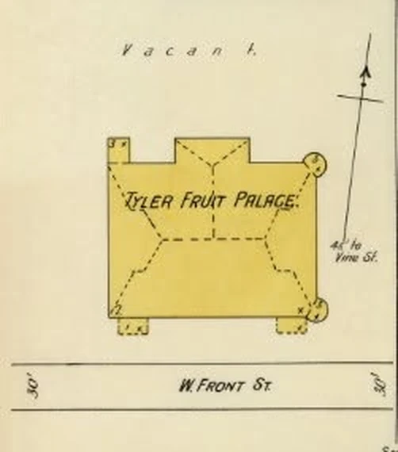

THE TEXAS FRUIT FESTIVAL
THAT DIDN'T LAST
Old School Tyler · Texas Fruit Palace · South Vine & West Front · 1895–1897
Before Tyler was the Rose City, it was fruit country. By 1900, roughly a million fruit trees, mostly peaches, grew around Lindale and Swan, north of Tyler, and one Smith County community's post office was literally named Fruit.
In 1895, Tyler built a palace to show it off. The Texas Fruit Palace opened that July with the governor of Texas, a cavalry band sent by the president of Mexico and excursion trains from across the state. It came back in 1896, billed as Tyler's "Annual Carnival," and again in 1897.
Then the orchards failed. Tyler's yearly fruit celebration
never grew into the festival it could have been.

The palace as pictured on a vintage glass souvenir paperweight printed "Texas Fruit Palace, Tyler, Texas."
Digitally restored and enlarged from the paperweight illustration; fine detail is interpretive. Source item: Texas Fruit Palace paperweight, WorthPoint
3
July 1895, July 1896 and July 1897.
JULY 17
Formally opened in 1895 by Gov. Charles A. Culberson.
PEACHES
About a million fruit trees, mostly peach, around Lindale and Swan.
1933
The first Texas Rose Festival.
- Name
- Texas Fruit Palace (also called the Tyler Fruit Palace and the East Texas Fruit Palace)
- Location
- Northwest corner of South Vine and West Front streets, Tyler
- Building
- Large frame exhibition hall with towers, on land owned by Col. W. S. Herndon
- Seasons
- July 17–Aug. 1, 1895 · July 8–22, 1896 · July 14–24, 1897
- Main feature
- Exhibits of East Texas fruits and flowers: peaches above all, plus berries, plums, pears and grapes
- Later use
- Tyler Commercial College
- What happened
- The exposition faded after 1897; the building burned in December 1903
Before The Roses
TYLER WAS PEACH COUNTRY FIRST
Tyler's rose story is so famous that it's easy to forget what came before it.
In the early 1880s, once the railroad made shipping fruit practical, farmers around Lindale and Pine Springs began planting orchards. In 1891 the Smith County Canning Company built a factory at Pine Springs, and in 1894 the community got a post office with a name that said everything: Fruit, Texas.
The orchards kept spreading. The Handbook of Texas counts about a million fruit trees, mainly peach, in the Lindale and Swan area by 1900.
Tyler was already the county seat and a railroad town with a population of nearly 7,000 in 1890. It wanted the rest of Texas to know what was growing around it.
So it built a palace.
The Harvest
WHICH FRUIT WAS KING?
The palace was built to show off more than one crop. Albert Woldert's history of Tyler says that in the early 1890s, people in Smith County realized that "fine fruits, such as peaches, strawberries, plums, pears, grapes, and also vegetables, especially tomatoes," could be grown without irrigation and compare with any in the world. His next words introduce the Fruit Palace: it was built to prove it.
One fruit clearly led the way.
- Peaches
- The king. Almost a million fruit trees grew around Swan and Lindale in 1899, "mostly peach." Lindale's J. S. Ogburn cannery, opened in 1895, specialized in peaches.
- Strawberries & blackberries
- Grown in "large amounts" around Swan and Lindale.
- Plums & pears
- Named by Woldert among the fine fruits the county could grow.
- Grapes
- On Woldert's list, and the fruit chosen for the 1895 Fruit Palace souvenir medal.
- Tomatoes
- Not a fruit to most growers, but Woldert singles them out among the vegetables.
Peaches were the crop that filled the orchards, the canneries and the rail cars. They were also the crop that would fall hardest.
January 1895 · The Idea
A PALACE FOR FRUIT
Palaces were the fashionable way for a Texas town to advertise itself in the 1890s. Fort Worth had built the Texas Spring Palace, and Waco had its Cotton Palace.
Tyler's version was about fruit. In January 1895, newspapers in St. Louis and Fort Worth reported that Tyler was "contemplating the erection of a fruit palace," with the Tyler Telegram as its loudest champion. One East Texas legislator put it more simply: "We will have a Fruit palace at Tyler."
By summer, they did. Local citizens raised a large frame exhibition building on the northwest corner of South Vine and West Front streets, about five blocks southwest of the downtown square, on land owned by Col. W. S. Herndon.
It had conical towers, arched windows and a roofline lined with flags. In front, the grounds were laid out as a park.

"Fruit Palace, Tyler, Tex.," from a syndicated feature that ran in newspapers around the country.

The real building: two conical towers, arched windows and a board fence around the grounds, with a horse-drawn wagon on the street out front.
Photo courtesy Smith County Historical Society
July 17, 1895 · Opening
THE GOVERNOR OPENS THE PALACE
The first season was scheduled for July 17 to August 1, 1895. On opening day, Texas Governor Charles A. Culberson formally opened the palace.
Its purpose, as Culberson put it, was "to exhibit the products of our great fruit region."
Visitors who walked inside found a building decorated with the crops themselves. According to a syndicated 1895 description, the interior walls and columns were covered with green moss and paneled with German millet and stalks of sugar cane. Sheaves of wheat bracketed the corners, and the great arches were festooned with Texas farm products.
The centerpiece was the fruit and flower exhibit. The same account claimed fruit grown around Tyler wasn't surpassed even by California's valleys, which was exactly the kind of thing a fruit palace was built to say.
"The back bone of the whole affair will be exhibits of fruits and flowers."
The Daily Texarkanian · July 10, 1895
Outside, the grounds had been turned into a park with electric fountains, rustic bridges and an artificial lake. A bicycle track circled the exposition, and races were held almost daily. The program also promised balloon ascensions, military parades and a "battle of roses," decades before roses became Tyler's signature.
The Dixie Guards of Little Rock, a drill company made up entirely of women, gave daily military exhibitions.
A Gift From Mexico
PORFIRIO DÍAZ SENDS A BAND
The biggest attraction may have been the music.
Mexican President Porfirio Díaz sent the Fourth Cavalry Band of the Mexican army, directed by Domingo López, to play at the palace, "without cost to the management." On July 22, 1895, Governor Culberson wrote Díaz to thank him.
The band became part of the Fruit Palace's identity. It came back for the second season in 1896, and the palace's president, Cone Johnson, was quoted afterward saying "it would be useless to think of having the palace again without the band."

The Mexican Fourth Cavalry Band (Unmounted) at the Fruit Palace's second annual exposition.
Photo courtesy Smith County Historical Society, as published in Robert E. Reed Jr.'s Tyler, Texas (Arcadia Publishing)
Getting There
EXCURSION TRAINS TO TYLER
A palace only works if people come, and in 1895 that meant the railroads.
The Cotton Belt sold round-trip excursion tickets from Texarkana for $3.85, and on July 30 it ran a free special train to the palace for its employees in Pine Bluff, Arkansas. The International & Great Northern got its own "railway day" at the exposition.
A Texarkana visitor came home calling the palace "a grand success" and reported Tyler "crowded with visitors from all over the state."
Visitors bought souvenirs to prove they had been there: medals, tokens and glass paperweights printed with a picture of the palace. Several surviving 1895 pieces are stamped with the exact dates of the first season, July 17 to August 1.

"Souvenir · Tyler, Texas · 1895 · Fruit Palace," with a cluster of grapes at its center.
Photo shared by Charles Wohletz in the Tyler Texas in Memoirs & Photographs Facebook group

"Texas Fruit Palace · July 17 to Aug. 1, 1895," with the building at its center.
Photo shared by Ronnie Urias in the Tyler Texas in Memoirs & Photographs Facebook group

"Texas Fruit Palace · Tyler, Tex. · July 17 to Aug. 1, 1895."
Photo shared by Ronnie Urias in the Tyler Texas in Memoirs & Photographs Facebook group
1896 · The Annual Carnival
TYLER DOES IT AGAIN
The Fruit Palace wasn't a one-time stunt. Its 1896 prospectus called the exposition "our Annual Carnival," and the second season ran July 8 to 22, 1896.
That year the palace was paired with the state encampment of the Texas Volunteer Guard at Camp Bliss, putting soldiers, drill competitions and fruit exhibits in Tyler at the same time. The Fruit Palace put up prize money for the drills, including a $100 prize. One news summary reported 15,000 people at the opening.
| Season | Dates | Notes |
|---|---|---|
| 1895 | July 17 – Aug. 1 | Opened by Gov. Culberson; Mexico's Fourth Cavalry Band |
| 1896 | July 8 – 22 | "Annual Carnival"; Texas Volunteer Guard encampment; the band returns |
| 1897 | July 14 – 24 | "Under a new management"; the last season in the record |
1897 · New Management
THE THIRD SEASON
In April 1897, the stockholders of the Texas Fruit Palace elected a new board of directors. By June, railroad ads were promoting the third season for July 14 to 24, "under a new management."
It went on as planned. A Brenham paper reported that a 105-pound pumpkin had been "exhibited at the Tyler Fruit Palace last week."
After that, the trail goes quiet. A passing 1898 mention says Tyler still held a yearly fruit exhibition on the Fruit Palace grounds, but no detailed report of a fourth season has turned up.
105 LBS.
One pumpkin · Tyler Fruit Palace · July 1897
After The Palace
A COLLEGE, THEN A FIRE
The building outlived the exposition. The 1898 Sanborn fire insurance map of Tyler still labels it the Tyler Fruit Palace, facing West Front Street near Vine.
It later became the home of Tyler Commercial College, a business school, which moved into the three-story frame structure at Vine and Front.
Then, early on a December morning in 1903, fire destroyed it.
The college carried on elsewhere. The Fruit Palace did not.

"Tyler Fruit Palace" on West Front Street, with its corner towers drawn as circles.
Sanborn Fire Insurance Map of Tyler, 1898; shared by Vicki Betts in the Tyler Texas in Memoirs & Photographs Facebook group
The Orchards
WHY PEACHES LOST
The Fruit Palace celebrated an industry that was about to be hit hard.
Around the turn of the century, a serious blight struck Smith County's orchards and spread quickly. The Handbook of Texas also blames droughts, freezes and disease for destroying the area's peach orchards. Some growers recovered by 1910, and the following year the county still produced more than 38,000 bushels of peaches and nectarines.
But the future was already growing in the same soil. The first recorded sale of rose plants in the area came in 1879, when the Shamburger family of Pine Springs sold rose bushes for $1.50. Nurserymen who knew how to bud and graft peach trees could apply the same skills to roses. After the canning factory at Pine Springs closed, its fruit growers began raising roses.
The first carload of roses shipped out of the area in 1917. By the 1920s, roses were a major business, and by the 1940s, more than half the rose bushes in the United States were grown within ten miles of Tyler.
- 1879
The first recorded rose sale
The Shamburger family of Pine Springs sells rose bushes for $1.50.
- Early 1880s
Orchards follow the railroad
Farmers around Lindale and Pine Springs plant fruit for shipment.
- 1894
A post office named Fruit
Pine Springs gets a post office called Fruit.
- 1895–1897
The Texas Fruit Palace
Three summer expositions in Tyler.
- About 1900
A million fruit trees, then blight
The orchards peak around Lindale and Swan before blight hits.
- 1903
The palace building burns
Fire destroys the former Fruit Palace, then home to Tyler Commercial College.
- October 1933
The first Texas Rose Festival
Tyler gets its festival, for roses.
October 1933
TYLER GOT ITS FESTIVAL. JUST NOT FOR FRUIT.
In October 1933, the women of the Tyler Garden Club, the Chamber of Commerce and local rose growers organized the first Texas Rose Festival.
It had a lot in common with the Fruit Palace. Both put Tyler's biggest crop on display. Both brought crowds and trains to town. Both were built to tell the rest of Texas what grew in East Texas soil.
The difference was timing. The Fruit Palace celebrated Smith County's fruit just as the orchards were about to collapse. The Rose Festival arrived after roses had already won.
Today, Texas peach festivals belong to other towns, like Weatherford's Parker County Peach Festival and the Stonewall Peach JAMboree in the Hill Country. Tyler's summer celebration is long gone, and its fall festival is for roses.
TYLER BUILT A PALACE FOR ITS FRUIT.
THEN IT BECAME THE ROSE CITY.
Legacy
THE FRUIT FESTIVAL THAT DIDN'T LAST
Tyler had a fruit festival for three summers. It never became a lasting one.
In the 1890s, Tyler had everything a great fruit festival needed:
- A million fruit trees just up the road, plus berry fields.
- A palace built for the harvest.
- A governor at the opening and a band from Mexico.
- Excursion trains full of visitors.
Then the orchards failed, the building burned, and Tyler built its identity around a different crop.
The corner of South Vine and West Front is still there. The Fruit Palace isn't.
THREE SUMMERS. ONE PALACE.
TYLER'S LOST FRUIT FESTIVAL.
Do you have a piece of the Fruit Palace?
If your family has a Fruit Palace medal, paperweight, spoon, photograph, stock certificate or story from the 1890s, we'd love to hear from you. Very little of the palace survives, and every piece helps fill in the picture.
Sources & Research Notes
WHERE THE HISTORY COMES FROM
This entry relies mainly on newspapers printed while the Fruit Palace was operating, found through the Library of Congress's Chronicling America archive, along with Albert Woldert's 1948 history of Tyler and the Handbook of Texas.
- Fort Worth Gazette (January 27, 1895)Tyler "contemplating the erection of a fruit palace," championed by the Tyler Telegram, and a legislator's "We will have a Fruit palace at Tyler" (p. 18).
- San Antonio Daily Light (June 1, 1895)The 1895 dates, July 17 to August 1.
- The Daily Texarkanian (July 10, 1895)Fruit and flower exhibits, bicycle races, balloon ascensions, military parades and the "battle of roses."
- The Daily Texarkanian (July 18, 1895)Cotton Belt excursion fares. A visitor's report of a "grand success" ran the next day (July 19).
- Brownsville Daily Herald (July 29, 1895)Gov. Culberson's July 22 letter to Porfirio Díaz: the July 17 opening, the palace's purpose and the Fourth Cavalry Band.
- Pine Bluff, Arkansas newspaper (August 5, 1895)The Cotton Belt's free special train to "the Great Texas Fruit Palace."
- "Tyler's Fruit Palace," syndicated feature (August 1895)The interior decorations, the park, the bicycle track, the Dixie Guards and the woodcut of the building. It also ran on August 22, 1895.
- The Daily Texarkanian (June 24, 1896)The 1896 dates and the prospectus calling it "our Annual Carnival."
- San Antonio Daily Light (July 9 and 12, 1896)The Texas Volunteer Guard encampment and the reported opening-day crowd (July 9).
- Austin Weekly Statesman (July 23, 1896)Fruit Palace drill prize money.
- Brownsville Daily Herald (July 6 and 31, 1896)The band's return and Cone Johnson's quote (July 6).
- San Antonio Daily Light (April 14, 1897)The new board of directors. The 1897 dates "under a new management" appeared in a railroad ad on June 14.
- Brenham Weekly Banner (August 5, 1897)The 105-pound pumpkin.
- Albert Woldert, A History of Tyler and Smith County, Texas (1948), p. 154The fruits Smith County set out to prove, the building's location, the Herndon property, the "East Texas Fruit Palace" name and the band loaned by Mexico (pp. 153–154). Via the Portal to Texas History.
- Marvin Mayer, "The Rise and Fall of Tyler Commercial College," SFASU Heritage Center (May 2014)The college in the former Fruit Palace and the December 1903 fire. Archived copy.
- Handbook of Texas — Smith CountyThe orchards, the million fruit trees, the blight, the 1910 recovery and the 1879 Shamburger rose sale.
- Handbook of Texas — SwanAlmost a million fruit trees, mostly peach, in 1899, plus large amounts of strawberries and blackberries.
- Handbook of Texas — LindaleFruit shipping by 1884 and the J. S. Ogburn peach cannery of 1895.
- Handbook of Texas — Pine SpringsThe 1891 cannery, the Fruit post office and the shift to roses.
- Handbook of Texas — Rose IndustryDroughts, freezes and disease; the 1917 carload of roses.
- Handbook of Texas — TylerPopulation, the peach blight and more than half the nation's rose bushes by the 1940s.
- Handbook of Texas — Texas Rose FestivalThe first festival in October 1933 and its organizers.
FAQ
FREQUENTLY ASKED QUESTIONS
Yes, briefly. The Texas Fruit Palace was an annual fruit exposition held in Tyler in the summers of 1895, 1896 and 1897. It did not continue as the orchards declined, and Tyler's lasting festival became the Texas Rose Festival, first held in 1933.
Peaches. The Handbook of Texas counts almost a million fruit trees, mostly peach, around Swan and Lindale in 1899, and Lindale's J. S. Ogburn cannery specialized in peaches. Strawberries, blackberries, plums, pears and grapes were also grown, and grapes appear on the 1895 Fruit Palace souvenir medal.
Not by that name. The closest thing was the Texas Fruit Palace, an annual fruit exposition Tyler held in the summers of 1895, 1896 and 1897, built around exhibits of East Texas fruit, including peaches. When the peach orchards declined, Tyler's yearly celebration shifted to roses with the Texas Rose Festival in 1933.
The Texas Fruit Palace was a large frame exhibition building and summer exposition in Tyler. Its main feature was exhibits of fruits and flowers, with bicycle races, balloon ascensions, military drills, a park with electric fountains, and Mexico's Fourth Cavalry Band.
Albert Woldert's 1948 history of Tyler places it at the northwest corner of South Vine and West Front streets, on property owned by Col. W. S. Herndon, about five blocks southwest of the downtown square.
Period newspapers show three seasons: July 17 to August 1, 1895; July 8 to 22, 1896; and July 14 to 24, 1897. Governor Charles A. Culberson formally opened it on July 17, 1895.
The building later became the home of Tyler Commercial College. According to Stephen F. Austin State University's history of the college, fire destroyed the building early on a December morning in 1903.
By about 1900, Smith County had roughly a million fruit trees, mostly peaches, around Lindale and Swan. A blight hit the orchards, and the Handbook of Texas also cites droughts, freezes and disease. Growers who already knew budding and grafting turned to rose bushes, and by the 1940s more than half the rose bushes in the United States were grown within ten miles of Tyler.
Tyler has a habit of building palaces. More than a century after the Fruit Palace, the Oil Palace became the would-be home of the Tyler Crude. More forgotten Tyler history lives in Old School Tyler.